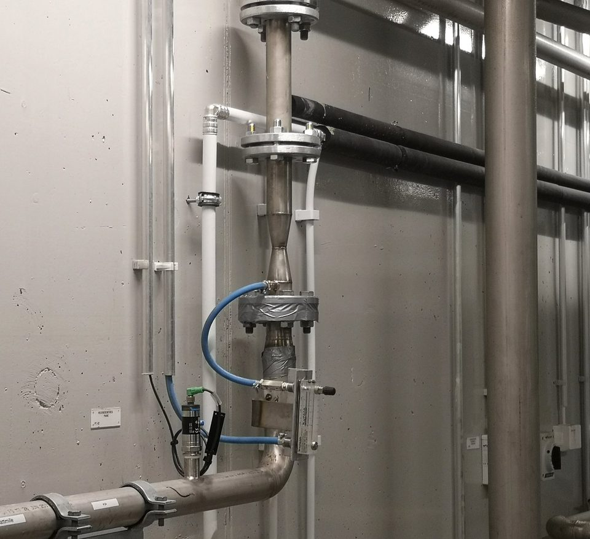

Tratamiento avanzado de agua · 2026
Su agua cumple el límite — dentro de la tubería existente.
Tratamiento OxTube para depuradoras, industria y riego. Se instala sin reconstruir su proceso — y usted recibe el registro medido, no una promesa.
Qué deja usted de pagar
Cuatro problemas de agua, escritos tal como llegan a su mesa. Cada uno tiene un requisito escrito en algún sitio — y un resultado que puede medirse.
Quejas por olor y corrosión
El H₂S deja de formarse cuando el oxígeno disuelto se mantiene por encima de cero. Usted evita las quejas, el hormigón corroído y el riesgo de seguridad — en redes de saneamiento, aguas de proceso, embalses y lagunas.
Leer más →Un requisito de vertido que aún no cumple
La Directiva (UE) 2024/3019 hace obligatorio el tratamiento de microcontaminantes para las grandes plantas (≥150 000 h-e). Documento del fabricante Kuopio 2019: reducción media de fármacos del 90 % en 0,7 s. Comunicado por la empresa Piloto de Salo: hasta un 100 % de eliminación comunicada.
Leer más →Agua con la que aún no puede regar
Según el RD 1085/2024, la clase de calidad de reutilización decide qué puede regar. Usted recibe el tratamiento y el seguimiento frente al límite de clase, con el punto de cumplimiento definido en el contrato.
Leer más →Una masa de agua que no sostiene la vida
Medido de forma independiente El oxígeno se aporta a la zona profunda y el cambio se mide donde ocurre. Rekilampi: oxígeno cerca del fondo de 0,28–0,36 mg/l en 2026, desde una línea de base de unos 0,0–0,1 mg/l.
Leer más →Todas las sustancias que medimos, con los resultados completos.
El ensayo de Kuopio recoge 42 mediciones. En 38 de ellas el OxTube eliminó más que cualquiera de los métodos convencionales probados en paralelo. En cuatro no lo hizo, y esas cuatro están en el gráfico. Un proveedor que solo le enseña los aciertos no le ha enseñado el ensayo.
Documento del fabricante Documento técnico de SansOx, mayo de 2021. No es una publicación independiente — esa distinción se mantiene visible en todo el sitio.
Por qué ahora
La reutilización del agua y el tratamiento de microcontaminantes generan demanda a corto plazo de soluciones instalables sobre lo existente. El motor es normativo, no agronómico: el agua cumple la clase o no la cumple.
Real Decreto 1085/2024
Aprobado el 22 de octubre de 2024, en vigor desde el 24 de octubre de 2024. Un proyecto de reutilización exige responsabilidades definidas, seguimiento y un punto de cumplimiento declarado.
≥80 % a cargo del productor
Según la Directiva (UE) 2024/3019, una cuarta etapa de tratamiento para microcontaminantes será obligatoria en 2045 para plantas de 150 000 habitantes equivalentes o más, con transposición nacional prevista para 2027. La financiación del productor cubre al menos el 80 % del coste elegible: el comprador no soporta el coste íntegro del cumplimiento.
Sin obra de reconstrucción
Las entidades de saneamiento necesitan capacidad de tratamiento adicional sin reconstruir toda la línea de proceso. El OxTube se instala en el flujo existente.
Sustitución de agua dulce
El agua regenerada puede sustituir recursos de agua dulce sometidos a estrés en el riego, y es la clase de calidad la que decide si puede usarse siquiera.
Las clases de calidad A–D de la UE y sus límites están en la página de agua regenerada.
Fuentes. Reglamento (UE) 2020/741 relativo a los requisitos mínimos para la reutilización del agua — eur-lex.europa.eu · Directiva (UE) 2024/3019 sobre el tratamiento de las aguas residuales urbanas — eur-lex.europa.eu · España, Real Decreto 1085/2024 — boe.es. El resumen normativo de este sitio no constituye asesoramiento jurídico.
Línea de tratamiento: efluente secundario → tratamiento OxTube o PharmOx → barrera de afino exigida → suministro para reutilización. El paquete incluye apoyo a la autorización, plan de riesgos de reutilización, seguimiento y un punto de cumplimiento definido.
Cómo funciona — del límite al registro
Usted nombra el límite y la línea
Una clase de calidad, una autorización de vertido, una queja por olor. El objeto de la entrega es el número, no el equipo.
El OxTube se instala dentro de la tubería existente
Sin reconstruir el proceso — instalación en la línea que usted ya tiene.
Un piloto monitorizado de 60–90 días mide frente al límite
La medición la realiza SpringNet Solutions; el punto de cumplimiento se acuerda antes de la primera muestra.
Usted recibe el registro
Registros construidos para la revisión de permisos y del regulador, que muestran si el límite se cumplió. Eso es lo que usted paga.


Dos desagües, la misma línea: el agua bombeada a través del OxTube sale blanca por el gas finamente disuelto; la no tratada no. La lechosidad es el propio paso de disolución, no impurezas.
La técnica en detalle — el proceso de cuatro fases dentro del tubo, de dónde sale la energía, el rango de funcionamiento y una herramienta de dimensionamiento — está en el anexo técnico de la página del piloto.
Los emplazamientos de donde procede
Cinco emplazamientos finlandeses y lo que comunicó cada uno. El gráfico del principio de esta página es el detalle por sustancia que hay detrás de una sola fila de esta tabla — Kuopio. Los otros cuatro figuran aquí porque una lista de referencias se puede comprobar y una afirmación no.
| Emplazamiento | Aplicación | Resultado comunicado | Periodo |
|---|---|---|---|
| Kuopio Documento del fabricante | Aguas residuales urbanas | Reducción media de fármacos del 90 % · tiempo de proceso de 0,7 s | 2019–2021 |
| Salo Comunicado por la empresa | Piloto PharmOx, agua depurada de salida | Hasta un 100 % de eliminación de fármacos · eliminación completa de E. coli · >21 mg/l de oxígeno disuelto · reducción de PFAS comunicada (compuestos y método no publicados) | 2024–2026 |
| Rekilampi Medido de forma independiente | Restauración de masas de agua | Oxígeno cerca del fondo 0,28–0,36 mg/l frente a 0,0–0,1 de partida (+0,18–0,36 mg/l) · 5,2 ha, 18 m de profundidad | 2023–2026 |
| Siuntio | Agua potable | Depuración del abastecimiento a los residentes | — |
| Puulavesi | Agua potable | Depuración para los habitantes de la zona del lago Puula | — |
La documentación técnica puede incluir diagramas de proceso, planes de muestreo, resultados de laboratorio y datos de explotación.
La capa de medición
El cumplimiento es una afirmación hasta que alguien lo mide. SpringNet Solutions aporta el seguimiento que convierte el tratamiento en evidencia.
Seis posiciones de sensor
Un bastidor bajo de acero inoxidable admite una combinación flexible de sensores.
Parámetros de ejemplo
El oxígeno disuelto, el potencial redox y la absorbancia UV sirven para el seguimiento del proceso y el ecológico.
Instalación permanente
El cableado protegido conecta la unidad sumergida con el sistema situado en la orilla.
Servicio durante todo el ciclo de vida
La calibración, las alarmas y los informes siguen los objetivos del emplazamiento y los requisitos de la autorización.
Nuestro lugar en la cadena
El agua se trata, el resultado se mide y el cambio se convierte en evidencia. Tres empresas, una entrega coordinada — y usted firma una sola vez.
La unidad OxTube disuelve el gas en el caudal dentro de su tubería existente.
Usted está aquíSensores, software de control y datos continuos — de la línea de base al informe.
Ir a SpringNet → CertificarOceanSite OyConvierte el cambio documentado en evidencia lista para créditos.
Ir a OceanSite →Las tres sociedades están registradas por separado. El grupo todavía no tiene sociedad matriz ni nombre comercial conjunto publicados, y en esta página no se afirma lo contrario. Quién firma cada parte — en detalle.
Lo que no afirmamos
Siguiente paso: un emplazamiento, 60–90 días, medido
Seleccione un emplazamiento y defina una prueba piloto monitorizada. El piloto fija la dosis, el reactivo, las condiciones de contacto y los puntos de verificación, y genera la evidencia que exige la autorización. No se ofrece ninguna garantía comercial antes de que esa evidencia exista.
Definir un piloto